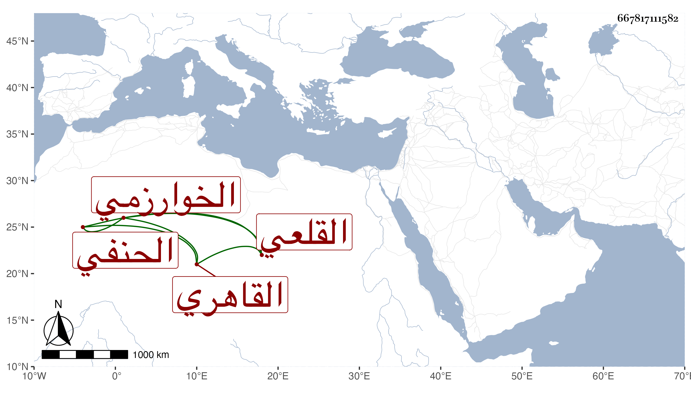

0902Sakhawi.DawLamic.ITO20230111-ara1.EIS1600.667817111582
Biography ID: 667817111582
126
عبد الحي بن مبارك شاه الخوارزمي القاهري القلعي الحنفي . ولد في رجب سنة ثلاث عشرة وثمانمائة واشتغل كثيرا في الفقه والأصلين والعربية ، وأخذ عن سعد الدين بن الديري وابن الاقصرائي والزين قاسم وبرع وأقرأ بعض مبتدئي الطلبة ونحوهم ، وولي رياسة المؤذنين بجامع القلعة وغيره ، وانتفع في الميقات ونحوه بالعز عبد العزيز الوفائي وغيره ، وكان خيرا قصيرا . مات في شعبان سنة ثمانين رحمه الله .
